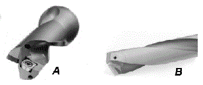

Современные твердосплавные сверла, обеспечивающие высокопроизводительную обработку, прошли долгий путь совершенствования, начиная с быстрорежущих сверл прошлого поколения, которые до сих пор находят свое применение на многих производствах. Результатом применения современных типов сверл является значительное снижение себестоимости изготовления отверстий. Стойкость твердосплавного сверла в 20 раз превышает стойкость сверла из быстрорежущей стали, при этом твердосплавное сверло позволяет развивать скорости резания в несколько раз выше обычных.
В процессе совершенствования неизменной сохранилась лишь спиральная форма сверла. Геометрия вершины современного сверла позволяет избежать трудностей, связанных с нулевой скоростью у вершины сверла.
Цельные твердосплавные сверла или сверла с напаянным твердым сплавом работают на низких скоростях резания с повышенными подачами, а сверла с механическим креплением пластин применяют при высоких скоростях резания с низкими подачами.
Сверла с механическим креплением твердосплавных пластин обеспечивают высокую эффективность обработки, универсальность и высокую стойкость. Современные сверла являются инструментом, предназначенным для любых стадий обработки. Они позволяют не только вести обработку с большей скоростью, как предыдущие поколения сверл, но и получать отверстия лучшего качества и точности. Причем это возможно и при сверлении,и при растачивании.
Современный ассортимент сверл охватывает достаточно широкий диапазон применений, из которого всегда можно выбрать оптимальный инструмент для конкретной операции. Сверла с механическим креплением пластин обладают очевидными преимуществами и для обработки отверстий, попадающих в их диапазон применения, должны рассматриваться в качестве первого выбора.
Наряду с расширением возможностей сверл с механическим креплением пластин по обработке точных отверстий с высоким качеством поверхности, растет их универсальность и в отношении обрабатываемых материалов, возможных условий обработки и типов выполняемых операций.
Сверла со сменными пластинами сочетают в себе преимущества прочного стального хвостовика и износостойких неперетачиваемых твердосплавных пластин. Эти сверла обладают высокой стойкостью и могут работать в самых разнообразных условиях.